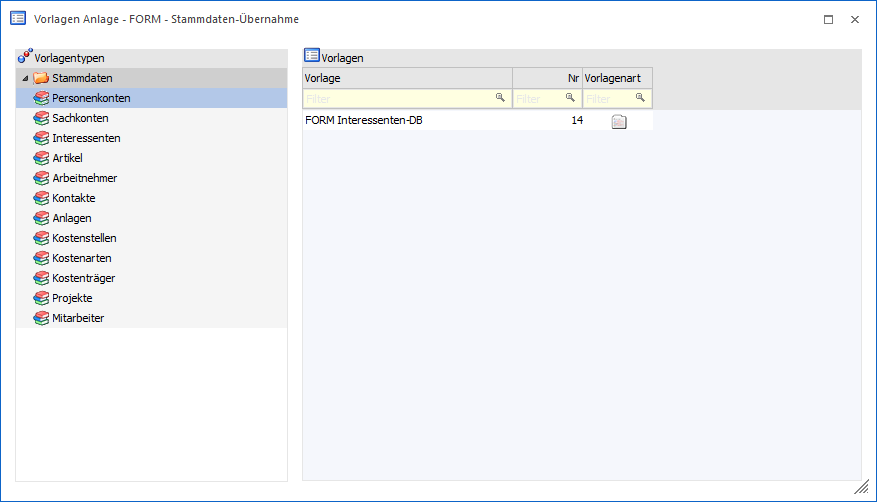
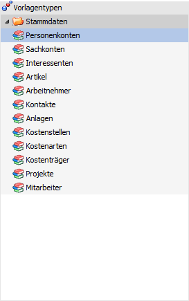
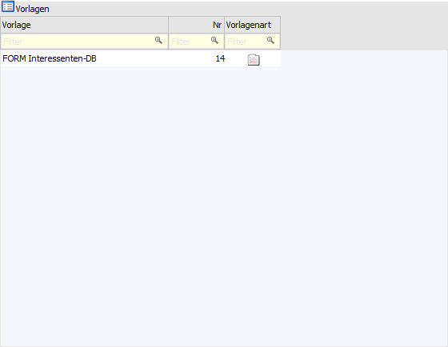

Wenn der Menüpunkt "FORM - Stammdaten-Übernahme" geöffnet wird, so kann zunächst die zu bearbeitende Vorlage ausgewählt werden.
Hinweis
Die Definition der Vorlage als solches wird in dem Kapitel Vorlagendefinition - FORM - Stammdaten-Übernahme detailliert erläutert.

Vorlagentyp

Zuerst muss ausgewählt werden, welcher Vorlagentyp bearbeitet werden soll
Ø Stammdaten
ü Personenkonten
ü Sachkonten
ü Interessenten
ü Artikel
ü Arbeitnehmer
ü Kontakte
ü Anlagen
ü Kostenstellen
ü Kostenarten
ü Kostenträger
ü Projekte
ü Mitarbeiter
Hinweise zum Vorlagentyp "Mitarbeiter"
In der Vorlagendefinition wird anstelle von "AN-Nummer" die Bezeichnung "Mitarbeiter-Nummer" verwendet und anstelle von "AN-Key" die Bezeichnung "Mitarbeiter-Key".
Die Benennung der anderen Felder erfolgt wie in den Arbeitnehmer-Vorlagen. Die Vorlagen sind dazu im Ribbon der Vorlagen-Anlage zu aktualisieren.
Hinweis zum Vorlagentyp "Mitarbeiter" für Mandanten aus Österreich
Beim Import eines Arbeitnehmers wird geprüft, ob es bereits einen Mitarbeiter mit der verwendeten Nummer gibt bzw. wird beim Import eines Mitarbeiters geprüft, ob es bereits einen Arbeitnehmer mit der verwendeten Nummer gibt. In den beiden aufgeführten Fällen wird dann nicht importiert, sondern es wird eine entsprechende Meldung angezeigt.
Tabelle "Vorlagen"

In der Vorlagentabelle werden alle Vorlagen des ausgewählten Typs angezeigt.
Ø Vorlage
Hier wird der Name der Vorlage angezeigt. Standardmäßig besteht dieser aus "FORM" gefolgt von dem Namen des FORM Formulars.
Ø Nr
In dieser Spalte wird die interne Vorlagennummer angezeigt.
Ø Vorlagenart
In dieser Spalte wird angezeigt, ob es sich um eine gültige Vorlage handelt, d.h. ob die "FORM Datenanlage" generell genutzt werden kann.
ü - gültige FORM-Vorlage
Wird in der
Spalte diese Grafik angezeigt, dann handelt es sich um eine gültige Vorlage.
ü  - ungültige FORM-Vorlage
- ungültige FORM-Vorlage
Wird in der
Spalte diese Grafik angezeigt, dann handelt es sich um eine ungültige Vorlage.
D.h. in der Regel, dass nicht alle Pflichtfelder mit einem FORM-Feld verknüpft
oder die Pflichtfelder mit einer Vorbelegung versehen wurden.